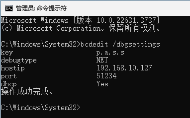

Windows内核远程调试起步#
先决条件#
两台运行Windows 8以上系统的物理机器或虚拟机，能通过局域网互相连通(需要是以太网或USB以太网)。 如何测试机器间的连通性
备注
对于QEMU虚拟机与外部主机的局域网连通配置 参考这篇
调试端已安装WinDbg。
备注
推荐安装WinDbg Preview，它是WinDbg的现代UI版本，可从微软商店搜索安装。本文以此作为示例
注意
被调试端应仅供驱动测试使用，其系统运行可能被调试器暂停或直接终止(崩溃)
配置步骤#
先了解调试端(即运行WinDbg的一端)与被调试端相连通的本地IP地址。可使用
ipconfig获取或参考 连通性测试在被调试端，以管理员权限打开CMD，执行：(其中使用的端口号和key可以自己另行指定，但有合法范围)
bcdedit /set debug on
bcdedit /dbgsettings net hostip:192.168.x.x(调试端IP) port:51234 key:p.a.s.s
后续可随时使用
bcdedit /dbgsettings查看所设置的调试端IP、端口、key，如图所示。
调试端启动WinDbg Preview，在文件界面，点击Attach To Kernel，如图。
填写在被调试端设置的端口号和key，目标IP可填可不填，如图。
完成填写后点击OK，点击Break或Go暂停或继续被调试端系统运行，如果在暂停期间被调试端画面不动、不响应操作，在继续后恢复，说明已成功开始调试。